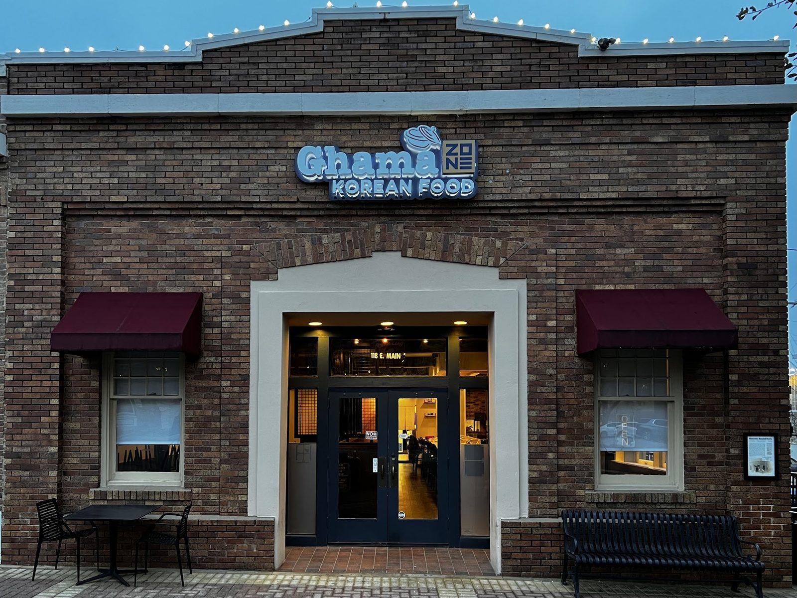

Stews and soups
Gamjatang and other stews with generous meat and banchan. Allow at least 20 minutes, so order early.
Korean and Japanese · Round Rock, TX
Index of the menu
Gamjatang, short rib, nigiri and banchan, with a friendly welcome at the bar.

What we cook
Stews, sushi and Korean plates.
Gamjatang and other stews with generous meat and banchan. Allow at least 20 minutes, so order early.

Nigiri and rolls with crispy toppings from the sushi bar.

Short rib, bulgogi, spicy pork and bibimbap, with pancake and dumpling starters.


4.5 / 5 · 663 Google reviews
1As a Korean, I highly recommend this place, it's one of the most authentic Korean restaurants you can find in Austin. We ordered gamjatang, and it tasted almost exactly like what we had in Korea. The meat portions were generous, and the side dishes (banchan) were great as well. The best part, though, was the service. We sat near the bar, and the owner (sajang-nim) was incredibly friendly and kept checking in on us.
2Highly recommend the short rib and surprisingly the nigiri sushi was very good. They have a lot of different flavors combining Japanese, Korean and other Asian influences in their menu. I had a great time here. The ambiance is very nice and would recommend.
3Leilani was an Amazing server ! She was very knowledgeable with the menu and we loved everything we tried. The kimchi was Amazing and it was my first time having marinated onions with Korean food but they were Fantastic!!!! We will be going back again soon .
About
A brick building under lit signage and dark red awnings. Modern Korean and Japanese cooking, with a sushi bar next to the stews.
Friendly service, generous portions and servers who know the menu.

Good to know
The menu notes a minimum 20 minute wait for the braised pork bone stew, so order it early or call ahead.
Yes. Nigiri and rolls, alongside the Korean plates.
It helps. The room can fill up at peak times, with a line at the door.
Yes. Banchan comes with meals, including kimchi and marinated onions.
In a brick building on East Main Street in old town Round Rock, under a lit sign and dark red awnings.
Visit
118 E Main St, Round Rock, TX 78664
Gamjatang takes at least 20 minutes, so order early. Call ahead when it's busy.